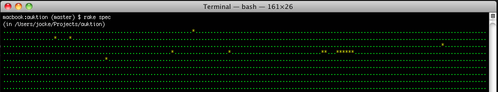
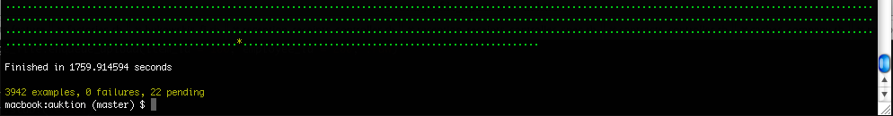
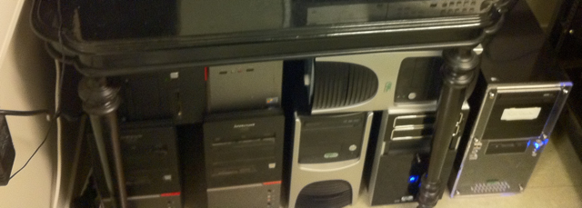
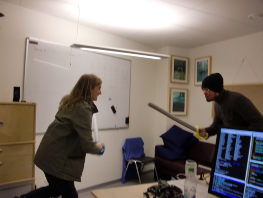
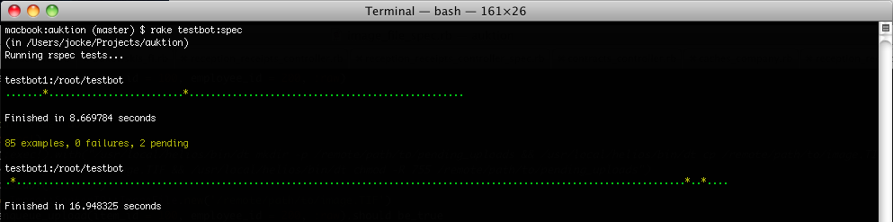
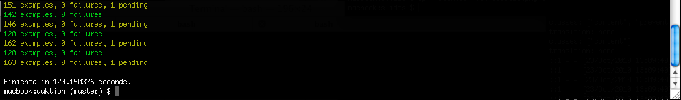

| space, → | next slide |
| ← | previous slide |
| d | debug mode |
| ## <ret> | go to slide # |
| c | table of contents (vi) |
| f | toggle footer |
| r | reload slides |
| z | toggle help (this) |
loading presentation...
We had a problem


- Tests that take way too long to run…
- 30 minutes!
Introducing our "rack"

- 7 x 2 cores = 14 test runners!
And other unused resources…

- I mean, the development machines!
(+10 test runners)
Results


- 2 minutes (down from 30 minutes)